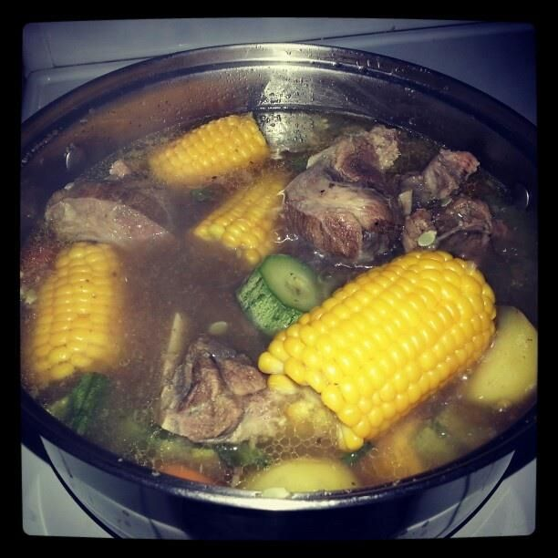
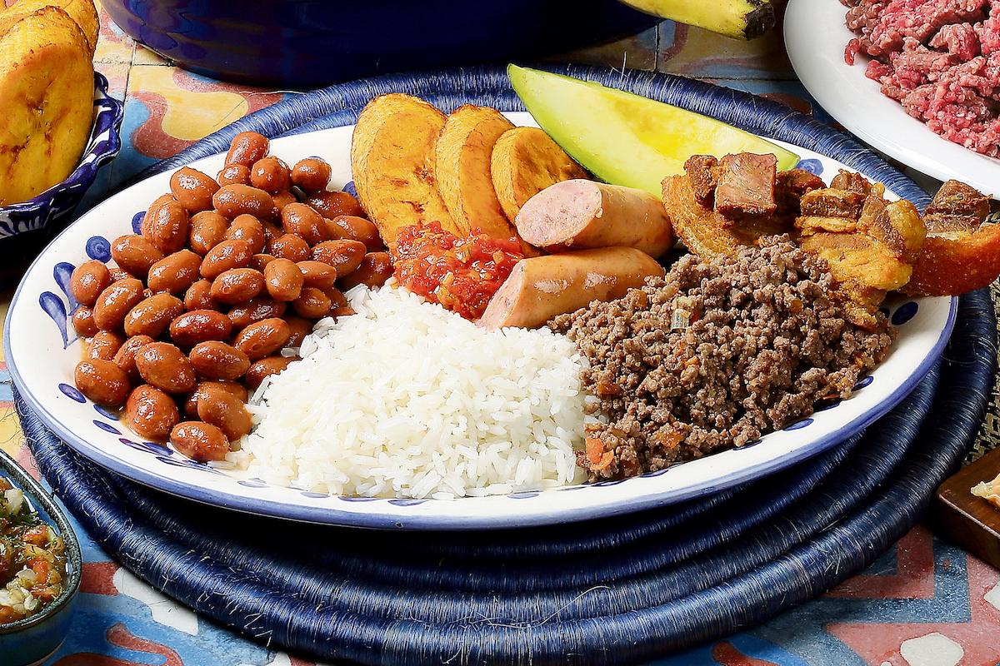

Olla de Carne
20/08/2019

La olla de carne es un cocido tradicional de Costa Rica, que consta de un caldo con carne en trozos pequeños a medianos y abundantes verduras. Es una sopa tradicional costarricense usada mayormente para consumir en el almuerzo o comida de mediodía. Su historia comienza con un platillo judío llamado adafina.

PepeEltoro: Mi hija y yo nos gusta salira a comer todos los fines de semana en la sodiita de las esquina. sigan publicando delicias.
El Casado
25/08/2019

El casado es un plato tradicional en la cocina costarricense. Se trata de una comida muy abundante que consiste en arroz, frijoles y un plátano dulce frito, que se suele acompañar de carne de vacuno, cerdo, pescado o pollo. A veces se incluye una guarnición de col en forma de ensalada y usualmente se le añade pasta en diversas variantes. Este platillo es considerado un blue-plate special en Costa Rica.
Ana25: Me encanta el gallo pinto, es mi desayuno diario y soy amante de las comidas típicas. Me encanta esta bloq y comentar, espero que sigan publicando recetas, muy práctico.
JuanPerez18: Me encanta la olla de carne, es deliciosa y como todos los sabados.
JG2009: todas las recetas me encantan pero esta más.